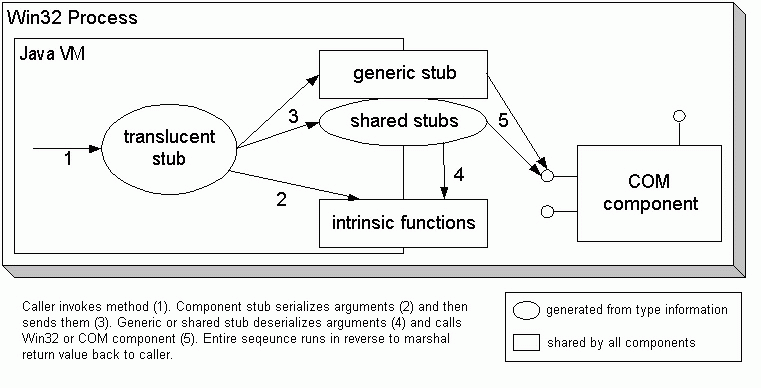
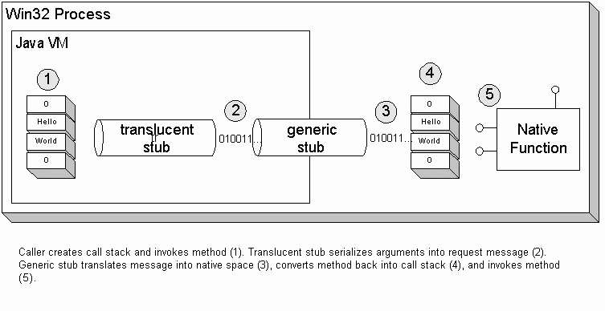
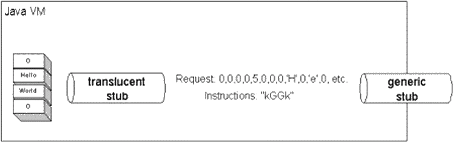

This document gives an overview of the Jawin Architecture. For most users only the sections about Error Handling and COM Threading contains "need to know" information.
One goal of any interop tool is transparency. Ideally, a Java programmer could use a COM or Win32 component without even knowing she was doing so. The component would behave just like any ordinary Java class, and the presence of Win32/COM would be entirely transparent to the programmer.
In reality, some details cannot be entirely hidden, so the next
best thing is to have translucent access. A translucent stub is a Java
class that hides most of the details of COM and Win32. The code
below shows translucent stub code for accessing the Windows registry
from Java. In this example. the methods have simple signatures that
do not cause any particular challenges for a marshalling layer.
As a result, the only departure from transparency is the presence
of COMExceptions.
public class Registry {
public static int OpenKey(int key, String subkey) throws COMException;
public static int CreateKey(int key, String subkey) throws COMException;
public static void DeleteKey(int key, String subkey) throws COMException;
public static String QueryStringValue(int key, String subkey) throws COMException;
public static byte[] RawQueryValue(int key, String subkey) throws COMException;
public static void CloseKey(int key) throws COMException;
}
In order to produce stubs like the one shown above, you need three things:
Here is how Jawin does it:  The translucent stub is generated from type information, and is different for each COM interface or DLL entry point. Shared stubs handle common method signatures by calling native methods with correlated JNI signatures. The generic stub handles "everything else", i.e. methods that have less common signatures and therefore no shared stub. Both the generic stub and shared stubs use helper functions called intrinsic functions to marshal particular data types.
Jawin intrinsic functions are the atoms of marshalling. An intrinsic function knows how to convert one or more data types into a wire format, or how to retrieve data types from a wire format.
On the Java side of Jawin, the intrinsics are located in the
org.jawin.io package and the org.jawin.Variant class.
LittleEndianInputStream and LittleEndianOutputStream
know how to handle Java primitives, e.g.
package org.jawin.io;
public class LittleEndianInputStream {
public final int readUnsignedShort() throws IOException {
InputStream in = this.in;
int ch2 = in.read();
int ch1 = in.read();
if ((ch1 | ch2) < 0)
throw new EOFException();
return (ch1 << 8) + (ch2 << 0);
}
//etc.
}
As the class names suggest, Jawin marshalling always uses little endian byte order, which is the ordering expected by Win32 and COM. This strategy could be called "Java makes right" since all the byte-ordering work is done in Java, both during method calls and returns. I chose this approach because I believe that Java code is easier to write and test and equivalent COM code.
In addition to handling data types, intrinsic functions also handle other semantic conversions. For example, there is a native intrinsic function that converts Win32/COM return values into Java exceptions:
#define CHECK_NONE 0
#define CHECK_FALSE 1
#define CHECK_HRESULT 2
#define CHECK_W32 3
inline bool checkRet(int ret, int flags) {
switch (flags) {
case CHECK_NONE:
return true;
case CHECK_FALSE:
if (!ret) {
JNIComException::SetLastError();
return false;
}
return true;
case CHECK_HRESULT:
if (FAILED(ret)) {
JNIComException::SetContextException(ret);
return false;
}
return true;
case CHECK_W32:
if (ret != ERROR_SUCCESS) {
JNIComException::SetContextException(ret);
return false;
}
return true;
default:
JNIComException::SetContextException("Invalid code in checkRet");
return false;
}
}
On the native side of Jawin, the intrinsic functions are spread across SharedStubs.cpp, GenericStub.cpp, and Transform.cpp. At some future date they may be factored into an Intrinsics.cpp.
Jawin uses shared stubs to marshal COM and Win32 methods that have common signatures. For example, consider the following Win32 function calls:
HGDIOBJ GetStockObject(int fnObject);
HRESULT CoInitialize(LPVOID reserved);
BOOL UpdateWindow(HWND hwnd);
BOOL DeregisterEventSource(HANDLE hEventLog);
Semantically, the argument types and return values of these methods are all very different. However, all these types marshal the same, as 32-bit values. Thus it is possible to implement all of these methods with a single JNI entry point:
public static native int invokeI_I(int arg0, int func, int flags);
This greatly reduces the number of entry points that must be implemented to
handle a given set of APIs. Instead of one entry point per method, you need only
one entry point per unique signature. Given this "shared stub" an
implementation of CoInitialize looks like this:
public static void CoInitialize() throws COMException {
FuncPtr fp = new FuncPtr("OLE32.DLL", "CoInitialize");
fp.invoke(0, ReturnFlags.CHECK_HRESULT);
}
Jawin's shared stubs are in the Java class
org.jawin.marshal.SharedStubs. The native
implementation is in the files SharedStubs.cpp and COMMarshal.cpp.
Of course, not all functions can be implemented with a finite number of shared stubs. For methods with more exotic signatures, Jawin also provides a generic stub.
Jawin's generic stub is a true marshaller, similar to RMI or DCOM. The generic stub views a function call as a sequence of events, as shown in the figure 2 below. Intrinsic functions serialize a function into a request message, and the generic stub moves this message into native space. There, another set of intrinsic functions convert the serialized request into a call stack and invoke the function. The entire sequence plays backwards to serialize a response message with return values or exceptions and ship it back to the caller.  The generic stub knows how to send messages back and forth from Java to Win32, but it does not know the specifics of any particular method. On the Java side, the translucent stub knows these details. However, there is no Win32-side equivalent of the translucent stub. Sticking to the RMI and CORBA naming convention, such a component would be called a skeleton. Jawin does not use a skeleton because the request message carries the type information with it.
In addition to the serialized request, the generic stub also passes an instruction stream that describes how to deserialize the request on the Win32/COM side. The instruction stream is sequence of bytecodes that is processed by a simple interpreter to rebuild the call stack. These are not bytecodes in the sense of a Java binary class; they are Jawin specific and arbitrary.
The figure below shows the instruction stream that is generated when
marshalling a call to the Win32 API MessageBoxW. The
instruction stream begins with "0,0,0,0" for the first argument, which
happens to be an integer valued zero. The second argument is a string,
which is a little more complex. The "5,0,0,0" is the little endian
representation of the string length, followed by the string's contents
encoded as Unicode characters. The remainder of the request (not shown
in the figure) is generated in similar fashion.

The code "IGGI" is the instruction stream that tells how to rebuild the
call stack. The "I" code indicates that a 32 bit value should be copied
directly into the stack. The "G" code indicates that the stub should
allocate a Unicode string, read the stream's contents into the string,
and then place a pointer to the string on the call stack. These
instruction codes are only a sample, Jawin's instruction string
vocabulary supports several stack transformation more complex than those
shown here. The instruction strings drive a state machine that is
implemented as a switch statement in the Transform::process
function.
Jawin's generic stub is primitive compared to RMI or DCOM. For example, it does not understand pointer aliasing. Improvements are being made the generic stub on an as-needed basis to support particular use cases.
(Jan 2002) I am working to document the instruction streams here.
Jawin automatically converts COM and Win32 errors into instances of org.jawin.COMException.
For COM errors, the exception will include the HRESULT and
the error string. For example, the following fragment attempts to
create a non-existent COM component:
// from demos/src/demos/BadHresult.java
try {
Ole32.CoInitialize();
DispatchPtr p = new DispatchPtr("new:Nonexistent.Component");
throw new Error("Attempt to create nonexistent component should fail");
} catch (COMException e) {
System.out.println("Got Expected Error: " + e);
}
The preceding example will produce the following COMException:
> ant "demo bad HRESULT"
> Got Expected Error: org.jawin.COMException: 800401e4: Invalid syntax
Often, the HRESULT is inadequate to diagnose an error. In
such situations, it is necessary to also collect any additional
thread-specific error information set by the object. As an example of this,
consider the ADO demo included with Jawin (see demos/src/jawin/ado). The
Ant build target "ado demo" passes in the data source name
"DSN=Pubs". If this data source name does not exist, you
will see an error like this one:
org.jawin.COMException: 80020009:
[Microsoft][ODBC Driver Manager] Data source name not found and no default
driver specified
[src=Microsoft OLE DB Provider for ODBC Drivers,
guid={0C733A8B-2A1C-11CE-ADE5-00AA0044773D}]
Without the additional information provided by SetErrorInfo,
you would see only the HRESULT and the generic information
Exception Occurred.
For Win32 errors, the COMException will include the error code
and text reported by calling GetLastError.
The issues in this section only exists for COM, and not for Win32/DLL programming.
First, COM requires that all threads calling a COM object must initialize the COM library before making any COM calls. This is done by calling:
Ole32.CoInitialize();
If a thread shares or uses COM objects from other threads, the
COM library should be initialized as multithreaded instead of as the
default single threaded. This is done by passing the
COINIT.MULTITHREADED parameter to the
CoInitialize method.
After a thread is finished with all COM calls, it should call:
Ole32.CoUninitialize();
Microsoft MSDN documents the details of these two methods; CoInitializeEx and CoUninitialize.
Unlike Java or Win32, COM provides some built-in protection for
components that can only be called safely from certain threads. The
architecture to support this is based around apartments. An
apartment is a group of running components and threads with
similar threading characteristics. The relationship between a COM
component and the apartment model is specified at deployment by setting
well-known values in the registry, but can also be modified at runtime
by implementing the IMarshal interface. There are a
confusing variety of possibilities:
IMarshal interface
to further customize threading behavior at runtime, adding additional
nuances to the apartment behavior suggested by their registry settings.
This feature is commonly used to create components that can visit any
apartment for the duration of a method call. Such components may be
called "agile" or be said to "aggregate the free-threaded marshaller."If you are a Java programmer, and you think that the preceding section sounds complex, bewildering, and likely to cause trouble, you are right! (For the full story on apartments and context, see [Ewa01].) To summarize the apartment story: Apartments are complex, and if you call a COM apartment from the wrong thread you may violate apartment rules and cause bizarre failures far removed from the problem point in the code.
The Jawin architecture provides two levels of service for Java programmers:
The Jawin architecture accomplishes these objectives by mandating the following programming model:
COMPtr,
DispatchPtr, or any subclass, you should only use that
pointer from the thread you are on. When you are done, you must
call the close method, which will release the underlying IUnknown*.
This approach is recommended for anyone calling COM objects from a single thread.COMPtr, DispatchPtr, or
subclass from more than one thread, you should call the
createGITRef()-method on the COMPtr. This
call should be made on the original thread, to create a context-neutral
reference in the Global Interface Table. After you do this, you can
use the newly created reference from any thread, and Jawin will
automatically hide the details of creating a local IUnknown*
as needed. While this approach will always work, it significantly increases
the overhead (by a factor 5-20) imposed by Jawin on each method call.
..
// create a standard thread local reference
DispatchPtr directDisp = new DispatchPtr(CLSID);
// get the thread neutral GIT reference
DispatchPtr gitDisp = (DispatchPtr)directDisp.createGITRef();
// and now we are ready to use the gitDisp-reference from several threads.
..
..
// finally after usage from multiple threads the two references
// must be closed on the original thread.
gitDisp.close();
directDisp.close();
createDirectRef()-method on the thread-neutral reference
to create a thread-local reference just before making a series of method
calls. This direct reference must be closed on the thread where it was
created. This option is recommended for Java programmers who are comfortable
with the details of COM apartments.| Copyright (c) 2000-2005, The Jawin Project - LICENSE |
|
| This documentation was written for version: 2.0, alpha 1 of Jawin. | |
| $Id: jawinarchitecture.html,v 1.9 2005/03/23 20:38:10 arosii_moa Exp $ |